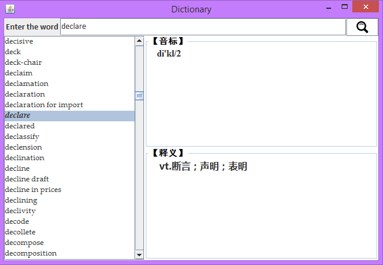
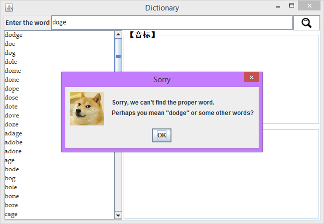

做完感受
这次写 JAVA 课的大作业，首先不得不佩服所给的 dictionary.txt 词典数据文件的厉害之处啊，各种大小写、连字符还有各种词组的不同情况在自己测试的时候都中奖了，我该高兴么…
实现过程
其实大作业的要求不高，大概就是一个词典的查询软件，提供了后台词典文件，只要完成其中的文件I/O，进行String的处理就可以了。
下面其实主要是一些算法问题，查找的话，既然有序（但是从某些角度说，
字符 - 的值要比 a-z 小啊，但是在 dictionary 中的顺序却不是这样！所以我暴力地进行了一次 QuickSort，果断 $O(n\log n)$)。不过鉴于变态的要求联想的功能，我就怂了，只能稍微修改下这个 quicksort。不过 JAVA 中 String 也是蛮厉害的，compareToIgnoreCase，还有什么 split 方法比西加加不知道高到哪里去了，简直是福利啊，也支持正则表达式~~却由此中枪了 - 的问题…..
关于其中的纠错问题，就厚颜无耻地选了一个Levenshtein Distance计算啊，还能控制精度，不亦乐乎…
下面给出Levenshtein Distance计算的函数….
private final int distance(String x, String y) { |
关于JList
说了这么多，我就来说说主题，JList…
Question 1: JList 的 Listeners
首先就吃了一个 ListSelectionListener 的亏啊，结果因为这个 GUI 中的其他Listeners 有冲突，遂抛弃之，改用 MouseListener 和 KeyListener（Only Up and Down），这才得以解决…泪目…
Question 2: 动态的 JList
因为 JList 要实时更新，所以默认的 JList 似乎办不到，这个时候 Google 之，采用 DefaultListModel，就能够进行 add 和 delete JList中的项目啦~~
Question 3: JList 上的特效
为了美观，我想要把 JList 上选中的项表示的明显一些，就是加粗，字号增大一号，但是 JList 本身似乎没有单独设置 selectedItem 的函数，这个时候就要把 JList 中的项目选为 JLabel 的 subclass，而不是简单的 String 了…
里面还是很复杂的…首先要定义一个 Item 的类，用来定义要放进去的东西，其实感觉 String 也是可以的啊…
public class MyListItem { |
这个时候就可以用 CellRenderer 来实现格式的设置啦~~
public class MyCellRenderer extends JLabel implements ListCellRenderer { |
好啦这个时候，这样定义我们的 JList 就可以啦这样选择的那项就会有一些特殊效果啦~
private JList <MyListItem> jltWordlist = new JList<MyListItem>(); |
效果图，还不错看吧~~

彩蛋之doge
哈哈哈，我一定是疯了~因为要实现如果用户输入一个错误的单词，要尽可能地根据字典内的单词进行纠错啊，这个时候我加了一个doge，不服来辩！！不知道会不会被杀掉…

后记
自定义添加单词
主要是文件 I/O 的操作啦~~
翻译句子
在后来的上机检查中，又要求我们实现对句子的翻译，不用管句子是否通顺，基本上用的是贪心算法，尽可能地组成一个长的在字典文件中词组查找并翻译，然后组合就可以了~~
第二次大作业
要求实现一个网络版的词典，从百度、必应和有道上获取翻译，并且还有一堆关于数据库和 Server/Client 的内容，附带用户注册、好友分享点赞等功能…很复杂！慢慢写吧，然而我成功找到了大腿！哈哈哈~~